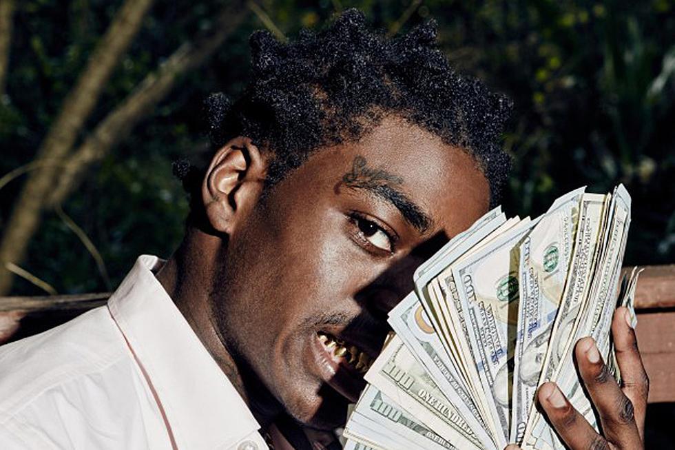

|  |
Kodak BlackKapri (born Dieuson Octave; June 11, 1997), better known by his stage name Kodak Black, is an American rapper. He is noted for his singles "Roll in Peace", "Tunnel Vision", and "No Flockin", as well as his numerous legal issues. |
|